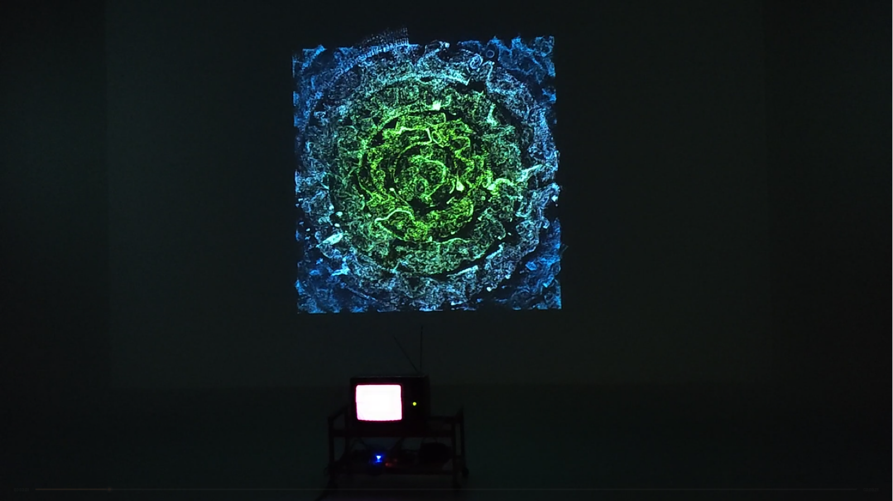
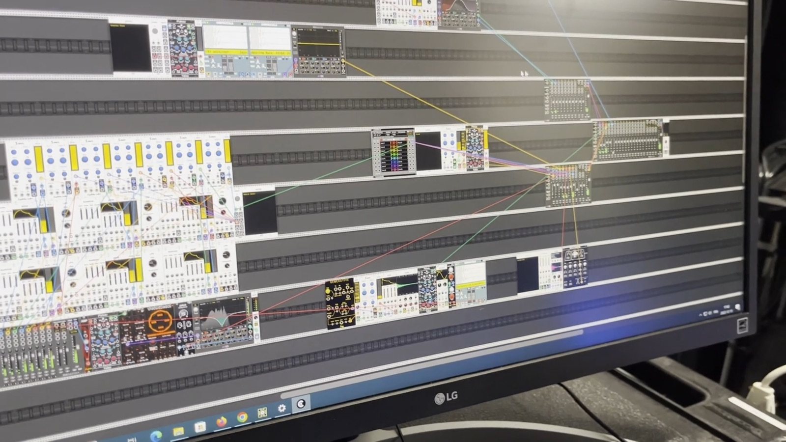

Cliquer pour regarder
Installations interactives
(9/22)
Un arbre mécanique qui transforme son environnement quand on le touche.
Anomalie pousse le visiteur à interagir avec « l'arbre mécanique » pour découvrir les changements qu'il provoque autour de lui.
(Fonctionnement)
De l'arbre aux images et au son.
Le visiteur touche l'arbre, et les visuels projetés se transforment devant lui.

Les capteurs passent par un Arduino. Les logiciels se parlent avec un signal OSC (UDP) : VCV Rack pour le son génératif, MadMapper pour les visuels.

J'ai conçu les ambiances audio génératives dans VCV Rack.
Images4 photos